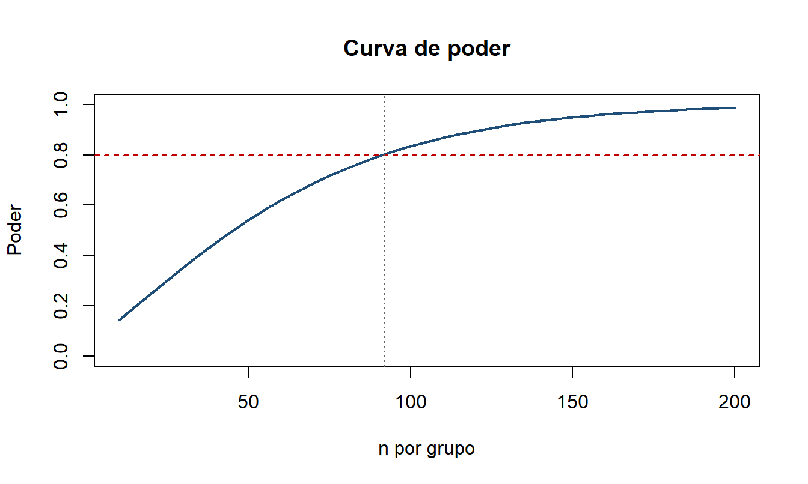

install.packages("pwr") # cálculos de poder con los efectos de Cohen
install.packages("pwr2") # ANOVA de dos víasCálculo de tamaño de muestra en R
Tutorial práctico con el paquete pwr para investigación en salud
1 Por qué importa el tamaño de muestra
Un estudio con muestra insuficiente no es un estudio barato, es un estudio que no puede responder su propia pregunta. Si el n es muy pequeño, el estudio no tiene poder para detectar un efecto que sí existe (error tipo II) y termina reportando un “no hay diferencias” que en realidad significa “no pude verlo”. Si el n es innecesariamente grande, se gastan recursos y se expone a más personas a los procedimientos del estudio sin ganancia en la evidencia.
El cálculo de tamaño de muestra es, además, un requisito ético y regulatorio. Los comités de ética, las revistas científicas y las guías de reporte (CONSORT para ensayos, STROBE para observacionales) exigen que el número lo justifiques antes de recolectar el primer dato.
1.1 Los cuatro ingredientes
Todo cálculo de tamaño de muestra combina cuatro elementos. Si fijas tres, el cuarto queda determinado.
| Elemento | Símbolo | Valor habitual | Qué significa |
|---|---|---|---|
| Nivel de significancia | \(\alpha\) | 0.05 | Probabilidad de error tipo I (decir que hay efecto cuando no lo hay) |
| Poder | \(1-\beta\) | 0.80 o 0.90 | Probabilidad de detectar el efecto si realmente existe |
| Tamaño del efecto | \(d\), \(h\), \(f\), \(w\), \(r\) | según el escenario | Qué tan grande es la diferencia que quieres poder detectar |
| Tamaño de muestra | \(n\) | lo que buscamos | Número de sujetos (por grupo, según la prueba) |
Nota
El punto crítico es el tamaño del efecto. No lo inventes: sácalo de la literatura previa, de un estudio piloto, o defínelo como la mínima diferencia clínicamente relevante, es decir, la diferencia más pequeña que cambiaría tu decisión clínica o de política pública.
1.2 Los errores tipo I y tipo II
| \(H_0\) es verdadera | \(H_0\) es falsa | |
|---|---|---|
| Rechazo \(H_0\) | Error tipo I (\(\alpha\)) | Decisión correcta (poder, \(1-\beta\)) |
| No rechazo \(H_0\) | Decisión correcta (\(1-\alpha\)) | Error tipo II (\(\beta\)) |
1.3 Qué función usar según tu diseño
| Pregunta de investigación | Prueba | Función | Efecto |
|---|---|---|---|
| Una media vs un valor de referencia | t de una muestra | pwr.t.test(type="one.sample") |
\(d\) |
| Una proporción vs un valor de referencia | prueba de proporción | pwr.p.test() |
\(h\) |
| Dos medias en grupos independientes | t de dos muestras | pwr.t.test(type="two.sample") |
\(d\) |
| Dos proporciones en grupos independientes | prueba de 2 proporciones | pwr.2p.test() |
\(h\) |
| Medias antes y después en los mismos sujetos | t pareada | pwr.t.test(type="paired") |
\(d\) |
| Tres o más medias, efecto estandarizado | ANOVA de una vía | pwr.anova.test() |
\(f\) |
| Tres o más medias, medias conocidas | ANOVA de una vía | power.anova.test() |
varianzas |
| Asociación entre dos variables numéricas | correlación | pwr.r.test() |
\(r\) |
| Asociación entre dos variables categóricas | chi cuadrado | pwr.chisq.test() |
\(w\) |
| Estimar una proporción con precisión dada | encuesta | fórmula clásica | precisión \(d\) |
2 Preparación del entorno
2.1 Instalar los paquetes
2.2 Cargar los paquetes
library(pwr)
library(pwr2)2.3 Referencia de Cohen para el tamaño del efecto
Cuando no tienes información previa, Cohen propuso valores convencionales. Úsalos como último recurso y siempre déjalo explícito en tu protocolo.
| Efecto | Pequeño | Mediano | Grande |
|---|---|---|---|
| \(d\) (medias) | 0.20 | 0.50 | 0.80 |
| \(h\) (proporciones) | 0.20 | 0.50 | 0.80 |
| \(f\) (ANOVA) | 0.10 | 0.25 | 0.40 |
| \(w\) (chi cuadrado) | 0.10 | 0.30 | 0.50 |
| \(r\) (correlación) | 0.10 | 0.30 | 0.50 |
En R puedes consultarlos directamente:
cohen.ES(test = "t", size = "medium")
Conventional effect size from Cohen (1982)
test = t
size = medium
effect.size = 0.53 Escenario 1: una media contra un valor de referencia
3.1 El problema
Un centro materno infantil quiere saber si la hemoglobina promedio de sus gestantes difiere del valor de referencia nacional de 11.5 g/dL. Considera relevante detectar una diferencia de 0.5 g/dL en cualquier dirección. La desviación estándar reportada en la literatura peruana es de 1.4 g/dL.
- Hipótesis: \(H_0: \mu = 11.5\) vs \(H_a: \mu \neq 11.5\)
- Diferencia mínima relevante: 0.5 g/dL
- \(sd = 1.4\), \(\alpha = 0.05\), poder \(= 0.80\), dos colas
3.2 Paso 1: calcular el tamaño del efecto
\[d = \frac{|\mu_1 - \mu_0|}{sd}\]
d1 <- 0.5 / 1.4
d1[1] 0.3571429Un \(d\) de 0.36 es un efecto pequeño a mediano según Cohen.
3.3 Paso 2: calcular el tamaño de muestra
pwr.t.test(d = d1, sig.level = 0.05, power = 0.80, type = "one.sample")
One-sample t test power calculation
n = 63.48258
d = 0.3571429
sig.level = 0.05
power = 0.8
alternative = two.sidedSe necesitan 64 gestantes (siempre se redondea hacia arriba).
3.4 Paso 3: verificar el poder con el n disponible
Supongamos que el centro solo puede reclutar 70 gestantes en el periodo del estudio.
pwr.t.test(n = 70, d = d1, sig.level = 0.05, type = "one.sample")
One-sample t test power calculation
n = 70
d = 0.3571429
sig.level = 0.05
power = 0.8380009
alternative = two.sidedCon 70 gestantes el poder sube a 84%, lo cual es cómodo.
3.5 Paso 4: efecto mínimo detectable
Y si el presupuesto solo alcanza para 50 gestantes, ¿qué diferencia podrías detectar?
pwr.t.test(n = 50, sig.level = 0.05, power = 0.80, type = "one.sample")
One-sample t test power calculation
n = 50
d = 0.4041852
sig.level = 0.05
power = 0.8
alternative = two.sidedCon 50 gestantes solo podrías detectar \(d = 0.40\), es decir, una diferencia de \(0.40 \times 1.4 = 0.57\) g/dL o mayor. Diferencias más pequeñas pasarían desapercibidas.
4 Escenario 2: una proporción contra un valor de referencia
4.1 El problema
La meta nacional de cobertura de vacunación completa en menores de un año es 85%. Una DIRESA sospecha que en su jurisdicción la cobertura real está alrededor de 78% y quiere una encuesta que permita detectar esa brecha.
- \(H_0: p = 0.85\) vs \(H_a: p \neq 0.85\)
- \(p\) esperada \(= 0.78\), \(\alpha = 0.05\), poder \(= 0.80\)
4.2 Paso 1: calcular el efecto h
Para proporciones no se usa la diferencia cruda sino la transformación arcoseno, porque estabiliza la varianza. La misma diferencia de 5 puntos porcentuales “pesa” distinto si va de 5% a 10% que si va de 45% a 50%.
\[h = 2\arcsin(\sqrt{p_1}) - 2\arcsin(\sqrt{p_2})\]
h2 <- ES.h(0.85, 0.78)
h2[1] 0.18101174.3 Paso 2: calcular el tamaño de muestra
pwr.p.test(h = h2, sig.level = 0.05, power = 0.80)
proportion power calculation for binomial distribution (arcsine transformation)
h = 0.1810117
n = 239.5484
sig.level = 0.05
power = 0.8
alternative = two.sidedSe requieren 240 niños.
4.4 Paso 3: verificar el poder
pwr.p.test(h = h2, n = 250, sig.level = 0.05)
proportion power calculation for binomial distribution (arcsine transformation)
h = 0.1810117
n = 250
sig.level = 0.05
power = 0.8164941
alternative = two.sided
Advertencia
Nunca calcules h con la diferencia aritmética de proporciones. Comprueba tú mismo que ES.h(0.10, 0.05) y ES.h(0.50, 0.45) dan valores muy distintos aunque ambas diferencias sean de 5 puntos.
5 Escenario 3: dos medias en grupos independientes
5.1 El problema
Un ensayo comunitario evalúa un programa de consejería en hipertensión. Se quiere detectar una reducción de 5 mmHg en la presión arterial sistólica del grupo intervenido frente al grupo control. La desviación estándar común esperada es de 12 mmHg.
- \(H_0: \mu_1 = \mu_2\) vs \(H_a: \mu_1 \neq \mu_2\)
- \(\alpha = 0.05\), poder \(= 0.80\), dos colas
5.2 Paso 1: tamaño del efecto
d3 <- 5 / 12
d3[1] 0.41666675.3 Paso 2: tamaño de muestra por grupo
pwr.t.test(d = d3, sig.level = 0.05, power = 0.80,
type = "two.sample", alternative = "two.sided")
Two-sample t test power calculation
n = 91.38922
d = 0.4166667
sig.level = 0.05
power = 0.8
alternative = two.sided
NOTE: n is number in *each* groupSe necesitan 92 participantes por grupo, es decir 184 en total. Ojo con esto: en las pruebas de dos muestras el n que devuelve pwr es por grupo, no el total.
5.4 Paso 3: poder con el n disponible
pwr.t.test(d = d3, n = 80, sig.level = 0.05,
type = "two.sample", alternative = "two.sided")
Two-sample t test power calculation
n = 80
d = 0.4166667
sig.level = 0.05
power = 0.7451248
alternative = two.sided
NOTE: n is number in *each* groupCon 80 por grupo el poder cae a 75%, por debajo del estándar de 80%.
6 Escenario 4: dos proporciones en grupos independientes
6.1 El problema
Un ensayo pragmático evalúa si los recordatorios por mensaje de texto mejoran la adherencia al tratamiento antituberculoso. La adherencia en el grupo control es 55% y se espera llevarla a 70%.
6.2 Paso 1: efecto h
h4 <- ES.h(0.70, 0.55)
h4[1] 0.31134946.3 Paso 2: tamaño de muestra por grupo
pwr.2p.test(h = h4, sig.level = 0.05, power = 0.80,
alternative = "two.sided")
Difference of proportion power calculation for binomial distribution (arcsine transformation)
h = 0.3113494
n = 161.9349
sig.level = 0.05
power = 0.8
alternative = two.sided
NOTE: same sample sizesSe necesitan 162 pacientes por grupo, 324 en total.
6.4 Paso 3: poder alcanzado
pwr.2p.test(h = h4, n = 150, sig.level = 0.05,
alternative = "two.sided")
Difference of proportion power calculation for binomial distribution (arcsine transformation)
h = 0.3113494
n = 150
sig.level = 0.05
power = 0.7692583
alternative = two.sided
NOTE: same sample sizes
Tip
Si los grupos son de tamaños distintos (por ejemplo, 1 caso por cada 2 controles), usa pwr.2p2n.test(h, n1, n2, ...).
7 Escenario 5: medias pareadas (antes y después)
7.1 El problema
Un programa de consejería nutricional mide el índice de masa corporal (IMC) de los mismos participantes antes y después de seis meses. Se espera una reducción media de 1.2 kg/m² con una desviación estándar de las diferencias de 3.0 kg/m².
Importante
En diseños pareados el denominador del efecto es la desviación estándar de las diferencias individuales, no la desviación estándar de las mediciones. Este es el error más frecuente en este escenario.
7.2 Paso 1: efecto
d5 <- 1.2 / 3.0
d5[1] 0.47.3 Paso 2: número de pares
pwr.t.test(d = d5, sig.level = 0.05, power = 0.80,
type = "paired", alternative = "two.sided")
Paired t test power calculation
n = 51.00945
d = 0.4
sig.level = 0.05
power = 0.8
alternative = two.sided
NOTE: n is number of *pairs*Se necesitan 52 participantes medidos dos veces cada uno.
7.4 Paso 3: poder
pwr.t.test(d = d5, n = 60, sig.level = 0.05,
type = "paired", alternative = "two.sided")
Paired t test power calculation
n = 60
d = 0.4
sig.level = 0.05
power = 0.8616174
alternative = two.sided
NOTE: n is number of *pairs*8 Escenario 6: ANOVA de una vía con efecto estandarizado
8.1 El problema
Se comparan tres esquemas de suplementación con hierro sobre los niveles de ferritina. No hay datos previos suficientes para estimar las medias, así que se asume un efecto mediano de Cohen (\(f = 0.25\)).
8.2 Paso 1: efecto de referencia
cohen.ES(test = "anov", size = "medium")
Conventional effect size from Cohen (1982)
test = anov
size = medium
effect.size = 0.258.3 Paso 2: tamaño de muestra por grupo
pwr.anova.test(f = 0.25, k = 3, sig.level = 0.05, power = 0.80)
Balanced one-way analysis of variance power calculation
k = 3
n = 52.3966
f = 0.25
sig.level = 0.05
power = 0.8
NOTE: n is number in each groupSe necesitan 53 sujetos por grupo, 159 en total.
8.4 Paso 3: poder con n fijo
pwr.anova.test(f = 0.25, k = 3, n = 40, sig.level = 0.05)
Balanced one-way analysis of variance power calculation
k = 3
n = 40
f = 0.25
sig.level = 0.05
power = 0.6756745
NOTE: n is number in each groupCon 40 por grupo el poder es de solo 68%, claramente insuficiente.
8.5 Paso 4: efecto mínimo detectable
pwr.anova.test(k = 3, n = 60, sig.level = 0.05, power = 0.80)
Balanced one-way analysis of variance power calculation
k = 3
n = 60
f = 0.2333207
sig.level = 0.05
power = 0.8
NOTE: n is number in each group9 Escenario 7: ANOVA de una vía con medias conocidas
9.1 El problema
Cuando sí tienes estimaciones de las medias de cada grupo, power.anova.test (del paquete base stats) es más directo que trabajar con \(f\). Un estudio compara la hemoglobina media en tres regiones: 11.2, 11.8 y 12.5 g/dL, con una desviación estándar común de 1.5 g/dL (varianza intragrupo \(= 2.25\)).
9.2 Paso 1: tamaño de muestra
medias <- c(11.2, 11.8, 12.5)
power.anova.test(groups = length(medias),
between.var = var(medias),
within.var = 2.25,
power = 0.80,
sig.level = 0.05)
Balanced one-way analysis of variance power calculation
groups = 3
n = 26.62842
between.var = 0.4233333
within.var = 2.25
sig.level = 0.05
power = 0.8
NOTE: n is number in each groupSe requieren 27 sujetos por región, 81 en total.
9.3 Paso 2: poder con n fijo
power.anova.test(groups = 3,
between.var = var(medias),
within.var = 2.25,
n = 30,
sig.level = 0.05)
Balanced one-way analysis of variance power calculation
groups = 3
n = 30
between.var = 0.4233333
within.var = 2.25
sig.level = 0.05
power = 0.8493474
NOTE: n is number in each group10 Escenario 8: correlación entre dos variables numéricas
10.1 El problema
Se quiere estimar la asociación entre el IMC y la presión arterial sistólica en adultos. La literatura sugiere una correlación de alrededor de r = 0.30.
pwr.r.test(r = 0.30, sig.level = 0.05, power = 0.80,
alternative = "two.sided")
approximate correlation power calculation (arctangh transformation)
n = 84.07364
r = 0.3
sig.level = 0.05
power = 0.8
alternative = two.sidedSe necesitan 85 personas. Verifiquemos el poder con 100:
pwr.r.test(r = 0.30, n = 100, sig.level = 0.05,
alternative = "two.sided")
approximate correlation power calculation (arctangh transformation)
n = 100
r = 0.3
sig.level = 0.05
power = 0.8647715
alternative = two.sided11 Escenario 9: asociación entre variables categóricas (chi cuadrado)
11.1 El problema
Se evalúa si el nivel educativo de la madre (tres categorías) se asocia con el estado nutricional del niño (dos categorías). La tabla es de 3x2, por lo que los grados de libertad son \((3-1)(2-1) = 2\). Se asume un efecto mediano (\(w = 0.30\)).
pwr.chisq.test(w = 0.30, df = 2, sig.level = 0.05, power = 0.80)
Chi squared power calculation
w = 0.3
N = 107.0521
df = 2
sig.level = 0.05
power = 0.8
NOTE: N is the number of observationsSe requieren 108 observaciones en total (aquí N sí es el total, no por grupo).
pwr.chisq.test(w = 0.30, df = 2, N = 200, sig.level = 0.05)
Chi squared power calculation
w = 0.3
N = 200
df = 2
sig.level = 0.05
power = 0.9744634
NOTE: N is the number of observations12 Escenario 10: encuestas para estimar una proporción
Este caso no es de contraste de hipótesis sino de estimación con una precisión deseada, y es el más común en encuestas de salud pública. La lógica cambia: ya no hay poder, hay margen de error.
\[n_0 = \frac{Z^2_{1-\alpha/2} \cdot p(1-p)}{d^2}\]
donde \(d\) es el margen de error absoluto que estás dispuesto a tolerar.
p <- 0.50 # escenario más conservador
d <- 0.05 # margen de error de 5 puntos porcentuales
z <- qnorm(0.975)
n0 <- (z^2 * p * (1 - p)) / d^2
ceiling(n0)[1] 38512.1 Corrección por población finita
Si la población es pequeña y conocida, por ejemplo 5,000 hogares del distrito:
N <- 5000
n_finita <- n0 / (1 + (n0 - 1) / N)
ceiling(n_finita)[1] 35713 Ajustes prácticos que casi siempre se olvidan
El n que sale de pwr es el número de observaciones analizables. Antes de escribirlo en el protocolo hay que inflarlo.
13.1 Efecto de diseño (muestreo por conglomerados)
Si muestreas por conglomerados (colegios, manzanas, establecimientos), las observaciones dentro de un conglomerado se parecen entre sí y la muestra pierde eficiencia:
\[DEFF = 1 + (m - 1)\rho\]
donde \(m\) es el tamaño promedio del conglomerado y \(\rho\) el coeficiente de correlación intraclase.
n_analizable <- ceiling(n_finita)
deff <- 1.5 # típico en encuestas de hogares
n_deff <- ceiling(n_analizable * deff)
n_deff[1] 53613.2 Pérdidas al seguimiento y no respuesta
\[n_{final} = \frac{n}{1 - \text{tasa de pérdida}}\]
tasa_no_respuesta <- 0.10
n_final <- ceiling(n_deff / (1 - tasa_no_respuesta))
n_final[1] 596De 357 observaciones analizables pasamos a 596 hogares a contactar. Ignorar estos ajustes es la razón número uno por la que los estudios terminan con menos poder del planificado.
14 La curva de poder
El poder no es un interruptor, es una curva con rendimientos decrecientes. Graficarla ayuda muchísimo a negociar el tamaño de muestra con quien financia el estudio.
n_seq <- seq(10, 200, by = 5)
poder <- sapply(n_seq, function(i)
pwr.t.test(n = i, d = d3, sig.level = 0.05,
type = "two.sample")$power)
plot(n_seq, poder, type = "l", lwd = 2, col = "#1f4e79",
xlab = "n por grupo", ylab = "Poder",
main = "Curva de poder", ylim = c(0, 1))
abline(h = 0.80, lty = 2, col = "#c00000")
abline(v = 92, lty = 3, col = "gray40")
Fíjate en la forma: pasar de 40 a 90 por grupo compra muchísimo poder, pero pasar de 150 a 200 casi no agrega nada. Ahí está el punto de eficiencia del diseño.
15 Errores frecuentes
- Calcular el tamaño de muestra después de recolectar los datos. El poder post hoc calculado con el efecto observado no aporta información: es una función directa del valor p. Si el estudio salió negativo, reporta el intervalo de confianza, no el poder observado.
- Confundir n por grupo con n total. En
pwr.t.test(type="two.sample"),pwr.2p.testypwr.anova.testelnes por grupo. Enpwr.chisq.testes el total. - Usar la diferencia cruda de proporciones como efecto. Para proporciones va
ES.h. - Usar la sd de las mediciones en un diseño pareado. Va la sd de las diferencias.
- Olvidar las pérdidas al seguimiento y el efecto de diseño.
- Elegir el efecto para que el n sea el que ya se puede pagar. Es hacer el cálculo al revés y suele terminar en un estudio sin poder real.
- No ajustar por comparaciones múltiples. Si vas a probar varias hipótesis primarias, reduce el \(\alpha\) (por ejemplo Bonferroni:
sig.level = 0.05/3) y recalcula. - Redondear hacia abajo. El
nsiempre se redondea hacia arriba conceiling().
16 Cómo reportar el cálculo en un artículo
Un párrafo de métodos completo debe permitir que cualquiera reproduzca el número. Plantilla:
El tamaño de muestra se calculó para contrastar la hipótesis de diferencia de medias entre dos grupos independientes. Asumiendo una diferencia mínima clínicamente relevante de 5 mmHg en la presión arterial sistólica, una desviación estándar común de 12 mmHg (Referencia), un nivel de significancia bilateral de 0.05 y un poder de 80%, se requieren 92 participantes por grupo. Considerando una pérdida al seguimiento esperada de 15%, el tamaño final es de 109 participantes por grupo (218 en total). Los cálculos se realizaron con el paquete
pwrversión 1.3-0 en R 4.4.1.
Los elementos que no pueden faltar: la hipótesis, el efecto y de dónde salió, la variabilidad y de dónde salió, \(\alpha\), el poder, el n resultante, el ajuste por pérdidas y el software usado.
17 Checklist antes de cerrar el protocolo
18 Recursos y referencias
- Champely S. pwr: Basic Functions for Power Analysis. R package. https://CRAN.R-project.org/package=pwr
- Cohen J. Statistical Power Analysis for the Behavioral Sciences. 2a ed. Lawrence Erlbaum, 1988.
- Lu Q, Luo X, Chen S. pwr2: Power and Sample Size Analysis for One-way and Two-way ANOVA Models. R package.
- Schulz KF, Altman DG, Moher D. CONSORT 2010 Statement. BMJ. 2010;340:c332.
- Hoenig JM, Heisey DM. The abuse of power: the pervasive fallacy of power calculations for data analysis. The American Statistician. 2001;55(1):19-24.
Tutorial elaborado como parte del curso de Bioestadística. Código y materiales disponibles en el repositorio de GitHub.